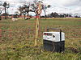

electric-fence

Definition: An electric fence is a barrier that uses electric shocks to deter people and/or other animals from crossing a boundary. The voltage of the shock may have effects ranging from discomfort to death. Most electric fences are used for agricultural fencing and other forms of non-human animal control, although they are also used to protect high-security areas such as military installations or prisons, where potentially-lethal voltages may be used. Virtual electric fences for livestock using GPS technology have also been developed.
Source: Wikipedia
Wikipedia Page (Something wrong with this association? Let us know.)
Wikidata Page (Something wrong with this association? Let us know.)